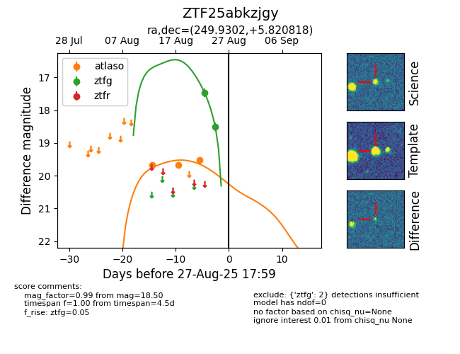

Target ZTF25abkzjgy at 2025-08-27 17:59, see:
FINK: fink-portal.org/ZTF25abkzjgy
Lasair: lasair-ztf.lsst.ac.uk/objects/ZTF25abkzjgy
ALeRCE: alerce.online/object/ZTF25abkzjgy
alt names
ZTF25abkzjgy (ztf,fink)
coordinates:
equatorial (ra, dec) = (249.9302,+5.82082)
galactic (l, b) = (22.3275,+31.84009)
photometry
last atlaso=19.53, ztfg=18.50
3 atlaso, 2 ztfg detections
